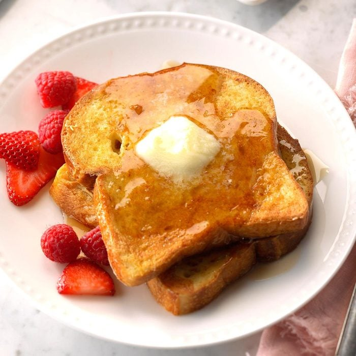

French Toast

Description
Ingredients
- 4 large eggs, lightly beaten
- 1 cup 2% milk
- 2 tablespoons sugar
- 2 teaspoons vanilla extract
- 1/8 teaspoon salt
- 12 slices day-old sandwich bread
Steps
- In a shallow dish, whisk together the first 5 ingredients. Preheat a greased griddle over medium heat.
- Dip bread in egg mixture, allowing to soak 30 seconds on each side. Cook on griddle until golden brown on both sides. Serve with toppings as desired.